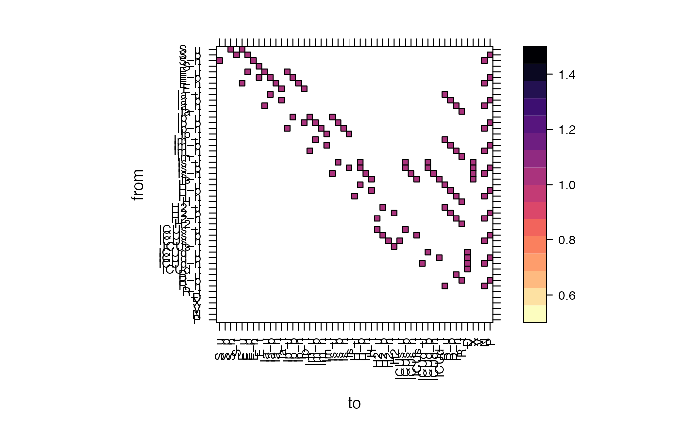

make weights vector for tests
make vector of test positivity
make_test_wtsvec(params, var_names = NULL) make_test_posvec(params, var_names = NULL)
Arguments
| params | parameter vector |
|---|---|
| var_names | variables names, in matching order to state vector/rate matrix |
Examples
pp <- read_params("PHAC_testify.csv") state1 <- state0 <- make_state(params=pp, testify=FALSE) ## unexpanded state1[] <- 1 ## occupy all states state <- expand_stateval_testing(state0, params=pp) vn <- setdiff(names(state0),non_expanded_states) wtsvec <- make_test_wtsvec(pp, vn) posvec <- make_test_posvec(pp, vn) ## need to make_ratemat() with *unexpanded* state, then expand it ratemat <- testify(make_ratemat(state1,pp), pp) betavec <- make_betavec(state,pp) tt2 <- ratemat tt2[tt2>0] <- 1 ## make all edges == 1 show_ratemat(tt2)if (require(igraph)) { g <- igraph::graph_from_adjacency_matrix(tt2) plot(g, layout=igraph::layout_nicely) }#>#> #>#> #> #>#> #> #>#> #> #>